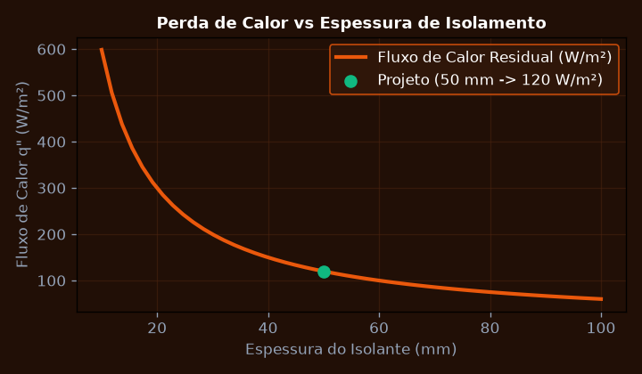
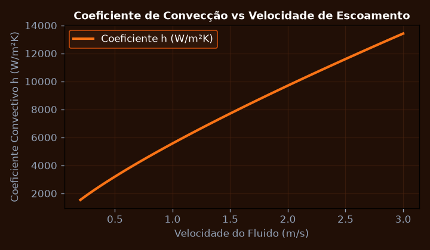
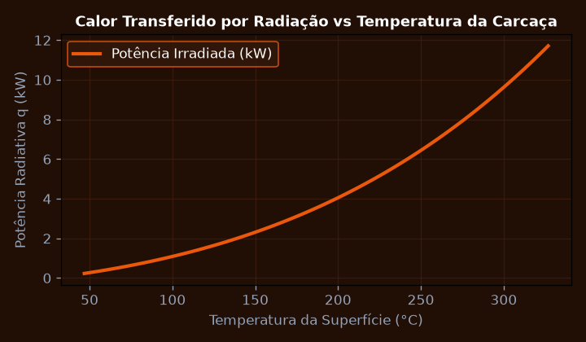
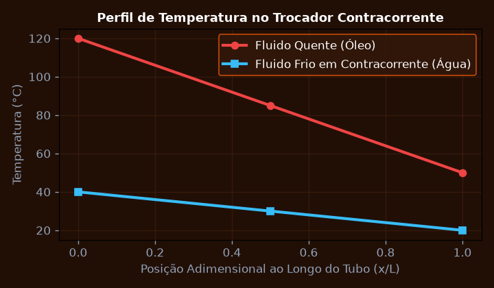
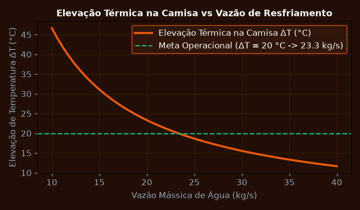
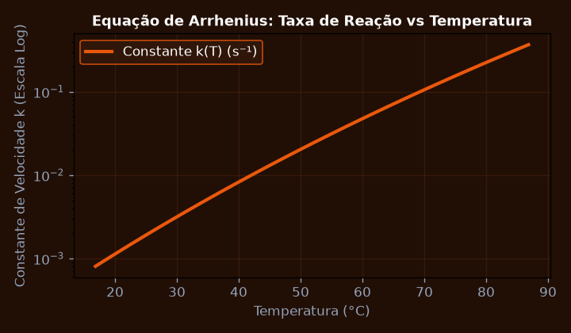

Condução Térmica Unidimensional em Paredes Compostas e Isolamento
Calcular a taxa de transferência de calor por condução q e a temperatura na interface de uma parede composta de reator farmacêutico formada por aço inox (k_1 = 16 W/mK, L_1 = 10 mm) e isolante de lã de rocha (k_2 = 0.04 W/mK, L_2 = 50 mm).
💎 Resolução Algébrica Passo a Passo (Padrão Symbolab)
R_1 = \frac{L_1}{k_1} = \frac{0,010}{16} = 0,000625 \text{ m}^2\cdot\text{K/W}.
R_2 = \frac{L_2}{k_2} = \frac{0,050}{0,04} = 1,250000 \text{ m}^2\cdot\text{K/W}.
R_{total} = R_1 + R_2 = 1,250625 \text{ m}^2\cdot\text{K/W} (o isolante representa 99,95% da resistência total).
q'' = \frac{180 - 30}{1,250625} = \frac{150}{1,250625} \approx 119,94 \text{ W/m}^2.
T_{interface} = T_{in} - q'' R_1 = 180 - (119,94 \times 0,000625) \approx 179,92 ^\circ\text{C}.
O isolante térmico reduz a perda de calor em mais de 98% garantindo estabilidade química da reação farmacêutica.

Convecção Forçada em Tubulações Industriais e Números Adimensionais
Calcular o número de Reynolds, o número de Nusselt e o coeficiente de convecção h para escoamento de água a 60 °C no interior de um tubo com diâmetro D = 25 mm a uma velocidade de v = 1.5 m/s.
💎 Resolução Algébrica Passo a Passo (Padrão Symbolab)
\rho = 983 \text{ kg/m}^3, \quad \mu = 4,67 \times 10^{-4} \text{ Pa}\cdot\text{s}, \quad k = 0,654 \text{ W/mK}, \quad Pr = 2,98.
Re_D = \frac{983 \times 1,5 \times 0,025}{4,67 \times 10^{-4}} = \frac{36,8625}{4,67 \times 10^{-4}} \approx 78.935 \text{ (Regime Turbulento Pleno)}.
Nu_D = 0,023 \times (78.935)^{0,8} \times (2,98)^{0,4} = 0,023 \times 8.243 \times 1,546 \approx 293,1.
h = Nu_D \frac{k}{D} = 293,1 \times \frac{0,654}{0,025} \approx 7.667 \text{ W/m}^2\cdot\text{K}.
Elevado coeficiente convectivo assegurando resfriamento ultrarrápido dos reatores em regime turbulento.

Radiação Térmica: Lei de Stefan-Boltzmann e Fatores de Forma
Calcular a taxa líquida de transferência de calor por radiação entre a carcaça de um reator a T_1 = 500 K (emissividade epsilon = 0.85, área A = 2.0 m^2) e as paredes da sala a T_2 = 300 K.
💎 Resolução Algébrica Passo a Passo (Padrão Symbolab)
q_{rad} = \epsilon \sigma A (T_1^4 - T_2^4).
T_1^4 = (500)^4 = 6,25 \times 10^{10} \text{ K}^4 \quad \text{e} \quad T_2^4 = (300)^4 = 8,10 \times 10^9 \text{ K}^4.
T_1^4 - T_2^4 = 62,5 \times 10^9 - 8,1 \times 10^9 = 54,4 \times 10^9 \text{ K}^4.
q_{rad} = 0,85 \times (5,670 \times 10^{-8}) \times 2,0 \times (54,4 \times 10^9) = 0,09639 \times 54,4 \times 10 = 5.243,6 \text{ Watts}.
A dissipação por radiação corresponde a 5,24 kW, tornando-se comparável à convecção natural em altas temperaturas.

Dimensionamento de Trocador de Calor pelo Método LMTD (Média Logarítmica)
Dimensionar a área de troca térmica A de um trocador de calor casco e tubos em contracorrente para resfriar óleo de 120 °C para 50 °C usando água de 20 °C para 40 °C com U = 450 W/m^2K.
💎 Resolução Algébrica Passo a Passo (Padrão Symbolab)
q = \dot{m} C_p (T_{h,in} - T_{h,out}) = 2,0 \text{ kg/s} \times 2100 \text{ J/kgK} \times (120 - 50) = 294.000 \text{ W} = 294 \text{ kW}.
\Delta T_1 = T_{h,in} - T_{c,out} = 120 - 40 = 80 ^\circ\text{C}; \quad \Delta T_2 = T_{h,out} - T_{c,in} = 50 - 20 = 30 ^\circ\text{C}.
\Delta T_{ln} = \frac{80 - 30}{\ln(80 / 30)} = \frac{50}{\ln(2,667)} = \frac{50}{0,9808} \approx 50,98 ^\circ\text{C}.
A = \frac{294.000}{450 \times 50,98} = \frac{294.000}{22.941} \approx 12,82 \text{ m}^2.
Configuração com feixe de 48 tubos de 1,5 polegadas em casco único de 3 metros de comprimento.

Balanço Geral de Massa e Energia em Reatores Químicos Contínuos (CSTR)
Determinar a vazão de fluido de resfriamento necessária na camisa de um reator químico contínuo CSTR operando em estado estacionário com reação exotérmica de Delta H = -85 kJ/mol.
💎 Resolução Algébrica Passo a Passo (Padrão Symbolab)
\dot{Q}_{gerado} = r_A V (-\Delta H_R) = (0,05 \text{ mol/L}\cdot\text{s}) \times (1000 \text{ L}) \times (85.000 \text{ J/mol}) = 4.250.000 \text{ W} = 4,25 \text{ MW}.
\dot{Q}_{escoamento} = \dot{m} C_p (T_{out} - T_{in}) = 10 \text{ kg/s} \times 4180 \times (80 - 25) = 2.299.000 \text{ W} = 2,30 \text{ MW}.
\dot{Q}_{camisa} = \dot{Q}_{gerado} - \dot{Q}_{escoamento} = 4,25 - 2,30 = 1,95 \text{ MW}.
\dot{m}_{água} = \frac{\dot{Q}_{camisa}}{C_p \Delta T_{camisa}} = \frac{1.950.000}{4180 \times (35 - 15)} = \frac{1.950.000}{83.600} \approx 23,32 \text{ kg/s}.
Balanço estacionário rigorosamente fechado com controle PID de vazão evitando fuga térmica (runaway reaction).

Cinética Química e Equação de Arrhenius em Processos Térmicos
Determinar a energia de ativação E_a e o fator pré-exponencial A para uma reação de degradação térmica de fármaco medindo as constantes de velocidade k_1 e k_2 nas temperaturas T_1 = 300 K e T_2 = 340 K.
💎 Resolução Algébrica Passo a Passo (Padrão Symbolab)
k_1(300 \text{ K}) = 0,0024 \text{ s}^{-1} \quad \text{e} \quad k_2(340 \text{ K}) = 0,0860 \text{ s}^{-1}.
\ln\left(\frac{0,0860}{0,0024}\right) = \ln(35,83) \approx 3,579.
\frac{1}{T_1} - \frac{1}{T_2} = \frac{1}{300} - \frac{1}{340} = 0,003333 - 0,002941 = 0,000392 \text{ K}^{-1}.
E_a = \frac{3,579 \times 8,314}{0,000392} = \frac{29,756}{0,000392} \approx 75.908 \text{ J/mol} = 75,91 \text{ kJ/mol}.
A sensibilidade térmica da molécula exige rigoroso controle em câmara frigorífica a 4 °C para prazo de validade de 24 meses.
